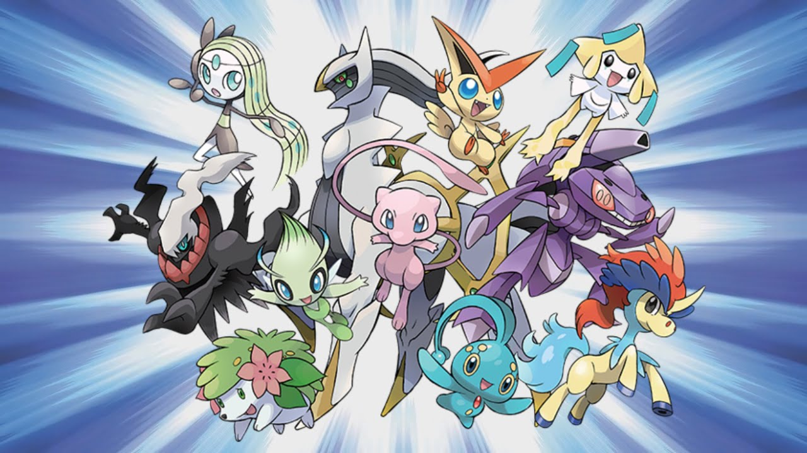

O que é pokémon?
Pokémon é uma franquia de mídia que pertence a The Pokémon Company, tendo sido criada por Sat[oshi Tajiri em
1995.
Ela é centrada em criaturas ficcionais chamadas "Pokémon", que os seres humanos capturam e os treinam para
lutarem
entre si com seus ataques de diversos tipos.
A franquia começou com um par de jogos lançados para o Game Boy original, desenvolvidos pela Game Freak e
publicados
pela Nintendo. Atualmente, a franquia se estende em jogos, cartas colecionáveis, série de televisão, além de
filmes,
mangás e brinquedos. Pokémon é a segunda franquia de mídia de jogos mais bem sucedida e lucrativa do mundo,
atrás da
franquia de Mario que também pertence a Nintendo.
Em 2006, a franquia celebrou seu aniversário de 10 anos. As vendas dos jogos (incluindo home console games,
como Hey
You, Pikachu!, para Nintendo 64) acumularam mais de 200 milhões de cópias vendidas. Em novembro de 2005, a
4Kids
Entertainment, que tinha conseguido o licenciamento da série animada, anunciou que havia concordado em não
renovar o
contrato da representação da franquia. A Pokémon USA Inc. (atualmente The Pokémon Company International),
uma
subsidiária da japonesa Pokémon Co., passou a supervisionar todas as licenças de Pokémon fora da Ásia. Até
2013,
a franquia de Pokémon acumulou 4 trilhões ao redor do mundo (equivalente a 40,98 bilhões de dólares).
Poké Notícia
Quer saber qual a melhor pokébola para capturar seu pokémon? venha
conferir.

Essa espécie não é tão conhecido pela a comunidade, o que você de
descobrir um pouco mais de seres
miticos
Quer uma ajudinha na sua campanha ou até mesmo na sua run?
O que você acha de capturar um Pokémon Pseudolendario?

.png)
.png)
.jpg)
.jpeg)